cat_lovers <- read_csv("data/cat-lovers.csv")04 - Types de données et transformations
PRO1036 - Analyse de données scientifiques en R
Pourquoi s’intéresser aux types de données ?
Exemple: Cat lovers
Un sondage a demandé à des gens leur nom et le nombre de chat qu’ils possèdent. Les instructions indiquaient d’entrer le nombre de chats en chiffres.
# A tibble: 60 × 3
name number_of_cats handedness
<chr> <chr> <chr>
1 Bernice Warren 0 left
2 Woodrow Stone 0 left
3 Willie Bass 1 left
4 Tyrone Estrada 3 left
5 Alex Daniels 3 left
6 Jane Bates 2 left
7 Latoya Simpson 1 left
8 Darin Woods 1 left
9 Agnes Cobb 0 left
10 Tabitha Grant 0 left
# ℹ 50 more rowsStatistique simple…
cat_lovers %>%
summarise(mean_cats = mean(number_of_cats))# A tibble: 1 × 1
mean_cats
<dbl>
1 NACa ne marche pas…
Pourquoi ?
?mean
Et maintenant ?
cat_lovers %>%
summarise(mean_cats = mean(number_of_cats, na.rm = TRUE))# A tibble: 1 × 1
mean_cats
<dbl>
1 NAToujours pas…
Regardons les données
glimpse(cat_lovers)Rows: 60
Columns: 3
$ name <chr> "Bernice Warren", "Woodrow Stone", "Willie Bass", "Tyro…
$ number_of_cats <chr> "0", "0", "1", "3", "3", "2", "1", "1", "0", "0", "0", …
$ handedness <chr> "left", "left", "left", "left", "left", "left", "left",…Regardons cela de plus près
Respecter les types de données
cat_lovers %>%
mutate(
number_of_cats = case_when(
name == "Ginger Clark" ~ "2",
name == "Doug Bass" ~ "3",
TRUE ~ number_of_cats
),
number_of_cats = as.numeric(number_of_cats)
) %>%
summarise(mean_cats = mean(number_of_cats))# A tibble: 1 × 1
mean_cats
<dbl>
1 0.833Enregistrer
Morale
- Si vos données ne se comportent pas comme vous l’attendez, il se peut qu’il s’agisse d’un probplème de type de données.
- Explorez et investiguez vos données, appliquez les modifications, sauvegardez vos données, vivez heureux
Types de données
Types de données dans R
- logical
- double
- integer
- character
- Il y a en d’autres mais nous les utiliserons peu
Logical et character
logical - Valeurs booléennes TRUE et FALSE
typeof(TRUE)[1] "logical"character - Texte
typeof("Hello")[1] "character"Double et integer
double - Nombres à virgule flottante (type par défaut pour les nombres)
typeof(1.5)[1] "double"typeof(7)[1] "double"integer - Nombres entiers (indiqué par un L)
typeof(1L)[1] "integer"typeof(1:3)[1] "integer"Concatenation
Des vecteurs peuvent être construits à l’aide de la fonction c()
c(1, 2, 3)[1] 1 2 3c("Hello", "World!")[1] "Hello" "World!"c(c("hi", "hello"), c("bye", "jello"))[1] "hi" "hello" "bye" "jello"Conversion
… intentionnelle
x <- 1:3
x[1] 1 2 3typeof(x)[1] "integer"y <- as.character(x)
y[1] "1" "2" "3"typeof(y)[1] "character"x <- c(TRUE, FALSE)
x[1] TRUE FALSEtypeof(x)[1] "logical"y <- as.numeric(x)
y[1] 1 0typeof(y)[1] "double"Conversion
… accidentelle
R va faire les conversions sans se poser de questions, surtout quand on mets différentes choses dans un même vecteur.
c(1, "Hello")[1] "1" "Hello"c(FALSE, 3L)[1] 0 3c(1.2, 3L)[1] 1.2 3.0c(2L, "two")[1] "2" "two"Conversion
- Explicite - Utilisez les fonctions as.*()
- as.logical()
- as.numeric()
- as.integer()
- as.character()
- as.double()
- Implicite - R va faire les conversions pour vous, soyez vigilant
Cas spéciaux
Cas spéciaux
- NA - Valeur manquante
- Inf - Infini
- NaN - Not a Number
# division par zéro -> Inf
7/0[1] Inf-1/0[1] -InfInf - Inf[1] NaNNA
x <- c(1, 2, 3, 4, NA)mean(x)[1] NAmean(x, na.rm = TRUE)[1] 2.5summary(x) Min. 1st Qu. Median Mean 3rd Qu. Max. NA's
1.00 1.75 2.50 2.50 3.25 4.00 1 NA
Les NA sont utilisés par R pour représenter des valeurs manquantes. Ils sont de type logique.
typeof(NA)[1] "logical"# TRUE or NA
TRUE | NA[1] TRUE# FALSE or NA
FALSE | NA[1] NAClasses de données
Classes de données
Nous avons parlé des types des données et nous allons maintenant parler des classes des données:
- Vecteurs sont comme des briques LEGO
- On les colle ensemble pour construire des structures plus compliquées, notamment des représentations de données
Par exemples:
- factor
- date
- data frame
factor
Les facteurs sont utilisés pour gérer les variables catégorielles, c’est-à-dire les variables qui ont un ensemble fixe et connu de valeurs possibles.
x <- factor(c("BS", "MS", "PhD", "MS"))
x[1] BS MS PhD MS
Levels: BS MS PhDtypeof(x)[1] "integer"class(x)[1] "factor"factor
Pour chaque facteur on a:
- levels - Les valeurs possibles
- labels - Les étiquettes associées aux valeurs
glimpse(x) Factor w/ 3 levels "BS","MS","PhD": 1 2 3 2as.integer(x)[1] 1 2 3 2Dates
y <- as.Date("2024-01-01")
y[1] "2024-01-01"typeof(y)[1] "double"class(y)[1] "Date"Dates
Les dates sont en réalité un entier (le nombre de jours depuis l’origine, 1 Jan 1970) et un entier (l’origine) collés ensemble
as.integer(y)[1] 19723as.integer(y) / 365 [1] 54.03562Data frames
Les data frames sont des structures de données qui sont comme des vecteurs de différentes classes.
df <- data.frame(x = 1:2, y = 3:4)
df x y
1 1 3
2 2 4typeof(df)[1] "list"class(df)[1] "data.frame"Listes
Les listes sont des conteneurs génériques pour des vecteurs de n’importe quel type.
l <- list(
x = 1:4,
y = c("hi", "hello", "jello"),
z = c(TRUE, FALSE)
)
l$x
[1] 1 2 3 4
$y
[1] "hi" "hello" "jello"
$z
[1] TRUE FALSEListes et data frames
- Un data frame est une liste spéciale contenant des vecteurs de longueur égale
- Lorsque nous utilisons la fonction
pull(), nous extrayons un vecteur du data frame
df x y
1 1 3
2 2 4df %>%
pull(y)[1] 3 4Travailler avec des facteurs
Exemple: Cat lovers
Nous commençons avec un data frame avec des caractères
glimpse(cat_lovers)Rows: 60
Columns: 3
$ name <chr> "Bernice Warren", "Woodrow Stone", "Willie Bass", "Tyro…
$ number_of_cats <chr> "0", "0", "1", "3", "3", "2", "1", "1", "0", "0", "0", …
$ handedness <chr> "left", "left", "left", "left", "left", "left", "left",…Plotting
Au moment de faire un graphique, R va faire une conversion de type
Si on lui demande de plotter des catégories, il va créer des facteurs
ggplot(cat_lovers, mapping = aes(x = handedness)) +
geom_bar()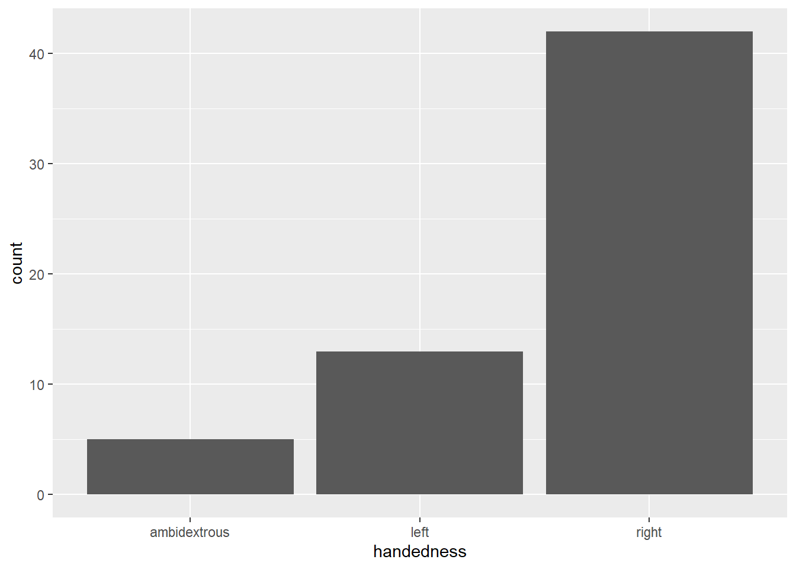
Les facteurs sont ordonnées par ordre alphabétique par défaut
On peut manipuler les facteurs avec forcats
La grammaire de la manipulation de données
Basé sur des fonctions qui correspondent à des verbes permettant de manipuler des dataframes.

- Les facteurs sont utiles lorsque vous avez des données catégorielles et que vous voulez remplacer l’ordre des vecteurs de caractères pour améliorer l’affichage
- Le package forcats fournit une suite d’outils utiles qui résolvent des problèmes courants avec les facteurs
Les fonctions de forcats
focats possède plusieurs fonctions pour manipuler les facteurs:
- fct_reorder() - Réordonne les niveaux d’un facteur en fonction d’une autre variable
- fct_relevel() - Réordonne les niveaux d’un facteur
- fct_infreq() - Réordonne les niveaux d’un facteur en fonction de leur fréquence
- fct_lump() - Regroupe les niveaux d’un facteur en “autres”
- fct_explicit_na() - Ajoute un niveau pour les valeurs manquantes
Exemple: starwars
starwars %>%
ggplot(aes(y = hair_color)) +
geom_bar()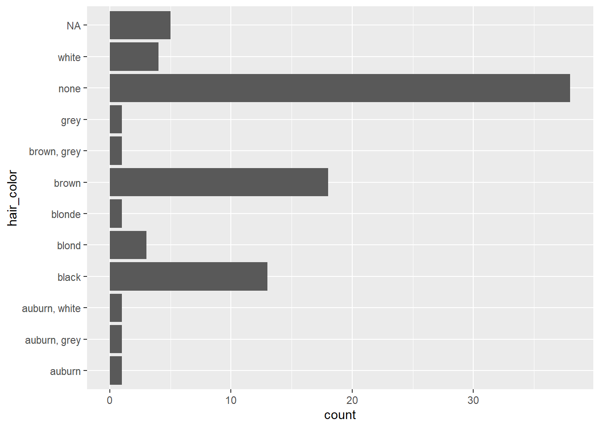
Ordre selon la fréquence : fct_infreq()
starwars %>%
ggplot(aes(y = fct_infreq(hair_color))) +
geom_bar()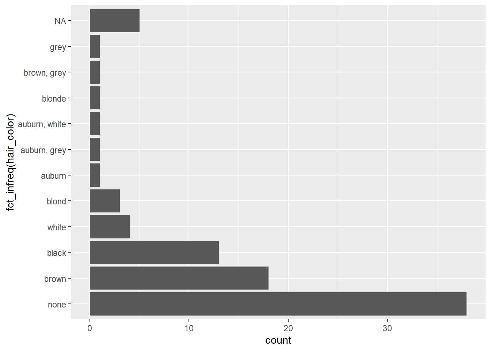
Regroupement de facteurs
Utile quand on a beaucoup de niveaux
starwars %>%
count(skin_color, sort = TRUE)# A tibble: 31 × 2
skin_color n
<chr> <int>
1 fair 17
2 light 11
3 dark 6
4 green 6
5 grey 6
6 pale 5
7 brown 4
8 blue 2
9 blue, grey 2
10 none 2
# ℹ 21 more rows… 31 niveaux dans cet exemple !
Regroupement de facteurs : fct_lump()
starwars %>%
mutate(skin_color = fct_lump(skin_color, n = 5)) %>%
count(skin_color, sort = TRUE)# A tibble: 6 × 2
skin_color n
<fct> <int>
1 Other 41
2 fair 17
3 light 11
4 dark 6
5 green 6
6 grey 6Regroupement de facteurs
Regardons maintenant la masse moyenne selon la couleur des yeux:
starwars %>%
mutate(eye_color = fct_lump(eye_color, n = 6)) %>%
group_by(eye_color) %>%
summarise(mean_mass = mean(mass, na.rm = TRUE)) %>%
ggplot(aes(x = eye_color, y = mean_mass)) +
geom_col()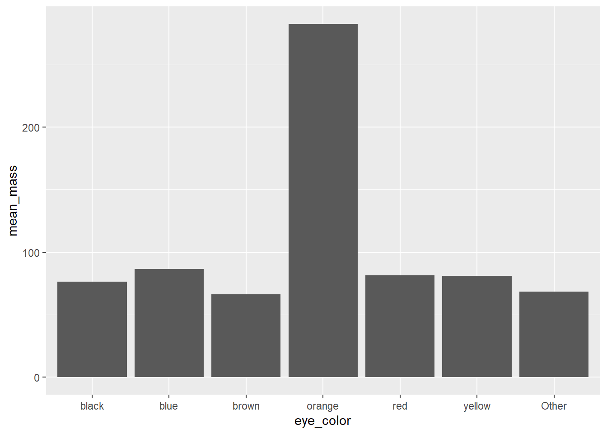
Regroupement et changement d’ordre !
Nous allons maintenant regrouper les couleurs des yeux et les ordonner selon la masse moyenne
Exemple: Hotels
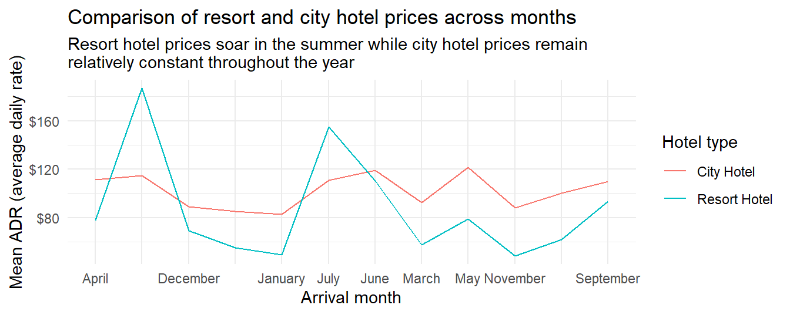
Exemple: Hotels
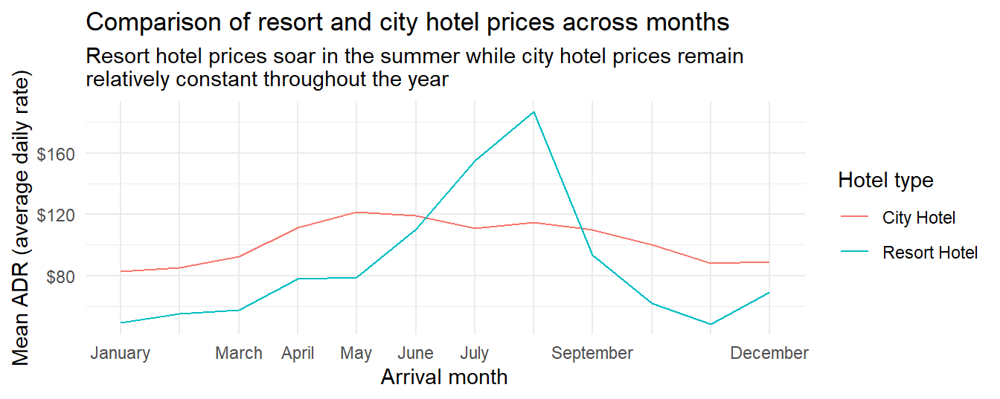
Choix manuel de l’ordre : fct_relevel()
La variable month.name est une variable intégrée dans R qui contient les noms des mois en anglais et dans le bon ordre.
hotels <- readr::read_csv("data/hotels.csv")
hotels %>%
mutate(arrival_date_month = fct_relevel(arrival_date_month, month.name)) %>% # On réordonne les mois
group_by(hotel, arrival_date_month) %>% # group by type d'hotel et mois d'arrivée
summarise(mean_adr = mean(adr)) %>% # calcul de l'ADR moyen pour chaque groupe
ggplot(aes(
x = arrival_date_month,
y = mean_adr, # mean_adr sur y-axis
group = hotel, # Groupe les lignes par type
color = hotel) # couleur par type
) +
geom_line() + # On veut des lignes
scale_y_continuous(labels = label_dollar()) +
theme_minimal() + # Utilise le minimal theme
labs(x = "Arrival month", # On met à jour les labels
y = "Mean ADR (average daily rate)",
title = "Comparison of resort and city hotel prices across months",
subtitle = "Resort hotel prices soar in the summer while city hotel prices remain\nrelatively constant throughout the year",
color = "Hotel type") +
scale_x_discrete(guide = guide_axis(check.overlap = TRUE)) # On s'assure que les labels ne se chevauchent pasRenommer les niveaux : fct_recode()
Si on veut simplement renommer les niveaux, on peut utiliser fct_recode()
cat_lovers %>%
mutate(handedness = fct_recode(handedness, gaucher = "left", droitier = "right")) %>%
mutate(handedness = fct_infreq(handedness)) %>%
ggplot(mapping = aes(x = handedness)) +
geom_bar()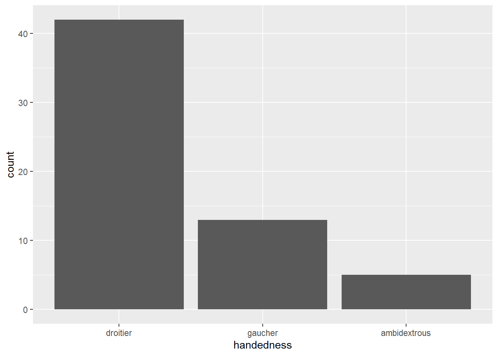
Travailler avec les dates
Dates

lubridate est un package tidyverse-friendly qui facilite la manipulation des dates
Il ne fait pas partie du coeur tidyverse, donc il doit être installé avec
install.packages("tidyverse)mais il n’est pas chargé avec lui, et doit être explicitement chargé aveclibrary(lubridate).- …
Exemple des hotels
Nous allons voir les bases mais travailler avec des dates peut s’avérer complexe mais cela peut apporter beaucoup à une analyse.
Calculer et visualiser le nombre de réservations à une date d’arrivée donnée
Étape 1 - Construire la date
library(glue) # glue permet de coller des éléments ensemble
hotels %>%
mutate(
arrival_date = glue("{arrival_date_year} {arrival_date_month} {arrival_date_day_of_month}")
) %>%
relocate(arrival_date) # pour afficher la nouvelle colonne à gauche# A tibble: 119,390 × 33
arrival_date hotel is_canceled lead_time arrival_date_year arrival_date_month
<glue> <chr> <dbl> <dbl> <dbl> <chr>
1 2015 July 1 Reso… 0 342 2015 July
2 2015 July 1 Reso… 0 737 2015 July
3 2015 July 1 Reso… 0 7 2015 July
4 2015 July 1 Reso… 0 13 2015 July
5 2015 July 1 Reso… 0 14 2015 July
6 2015 July 1 Reso… 0 14 2015 July
7 2015 July 1 Reso… 0 0 2015 July
8 2015 July 1 Reso… 0 9 2015 July
9 2015 July 1 Reso… 1 85 2015 July
10 2015 July 1 Reso… 1 75 2015 July
# ℹ 119,380 more rows
# ℹ 27 more variables: arrival_date_week_number <dbl>,
# arrival_date_day_of_month <dbl>, stays_in_weekend_nights <dbl>,
# stays_in_week_nights <dbl>, adults <dbl>, children <dbl>, babies <dbl>,
# meal <chr>, country <chr>, market_segment <chr>,
# distribution_channel <chr>, is_repeated_guest <dbl>,
# previous_cancellations <dbl>, previous_bookings_not_canceled <dbl>, …Étape 2 - Compter les réservations par dates
hotels %>%
mutate(arrival_date = glue("{arrival_date_year} {arrival_date_month} {arrival_date_day_of_month}")) %>%
count(arrival_date)# A tibble: 793 × 2
arrival_date n
<glue> <int>
1 2015 August 1 110
2 2015 August 10 207
3 2015 August 11 117
4 2015 August 12 133
5 2015 August 13 107
6 2015 August 14 329
7 2015 August 15 190
8 2015 August 16 98
9 2015 August 17 188
10 2015 August 18 94
# ℹ 783 more rowsÉtape 4 - Visualiser
hotels %>%
mutate(arrival_date = glue("{arrival_date_year} {arrival_date_month} {arrival_date_day_of_month}")) %>%
count(arrival_date) %>%
ggplot(aes(x = arrival_date, y = n, group = 1)) +
geom_line()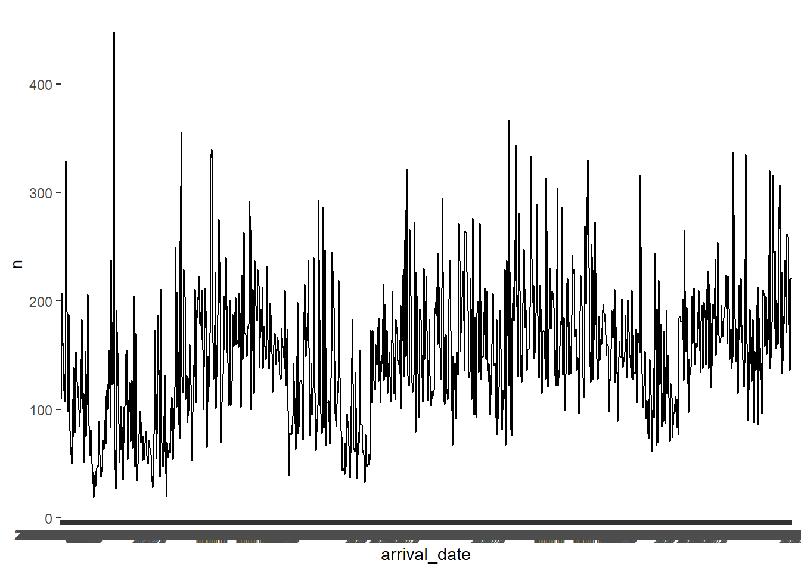
Quel est le problème ici ?
Étape 1 - Construire la date (comme une date)
library(lubridate) # pour les dates
hotels %>%
mutate(
arrival_date = ymd(glue("{arrival_date_year} {arrival_date_month} {arrival_date_day_of_month}"))
) %>%
relocate(arrival_date)# A tibble: 119,390 × 33
arrival_date hotel is_canceled lead_time arrival_date_year arrival_date_month
<date> <chr> <dbl> <dbl> <dbl> <chr>
1 2015-07-01 Reso… 0 342 2015 July
2 2015-07-01 Reso… 0 737 2015 July
3 2015-07-01 Reso… 0 7 2015 July
4 2015-07-01 Reso… 0 13 2015 July
5 2015-07-01 Reso… 0 14 2015 July
6 2015-07-01 Reso… 0 14 2015 July
7 2015-07-01 Reso… 0 0 2015 July
8 2015-07-01 Reso… 0 9 2015 July
9 2015-07-01 Reso… 1 85 2015 July
10 2015-07-01 Reso… 1 75 2015 July
# ℹ 119,380 more rows
# ℹ 27 more variables: arrival_date_week_number <dbl>,
# arrival_date_day_of_month <dbl>, stays_in_weekend_nights <dbl>,
# stays_in_week_nights <dbl>, adults <dbl>, children <dbl>, babies <dbl>,
# meal <chr>, country <chr>, market_segment <chr>,
# distribution_channel <chr>, is_repeated_guest <dbl>,
# previous_cancellations <dbl>, previous_bookings_not_canceled <dbl>, …Étape 2 - Compter les réservations par dates
hotels %>%
mutate(arrival_date = ymd(glue("{arrival_date_year} {arrival_date_month} {arrival_date_day_of_month}"))) %>%
count(arrival_date)# A tibble: 793 × 2
arrival_date n
<date> <int>
1 2015-07-01 122
2 2015-07-02 93
3 2015-07-03 56
4 2015-07-04 88
5 2015-07-05 53
6 2015-07-06 75
7 2015-07-07 54
8 2015-07-08 69
9 2015-07-09 80
10 2015-07-10 51
# ℹ 783 more rowsÉtape 3a - Visualiser
hotels %>%
mutate(arrival_date = ymd(glue("{arrival_date_year} {arrival_date_month} {arrival_date_day_of_month}"))) %>%
count(arrival_date) %>%
ggplot(aes(x = arrival_date, y = n, group = 1)) +
geom_line()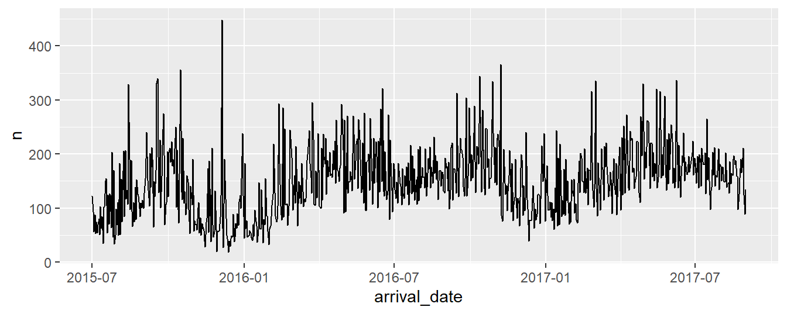
Étape 3b - Visualiser avec une courbe
hotels %>%
mutate(arrival_date = ymd(glue("{arrival_date_year} {arrival_date_month} {arrival_date_day_of_month}"))) %>%
count(arrival_date) %>%
ggplot(aes(x = arrival_date, y = n, group = 1)) +
geom_smooth() #<<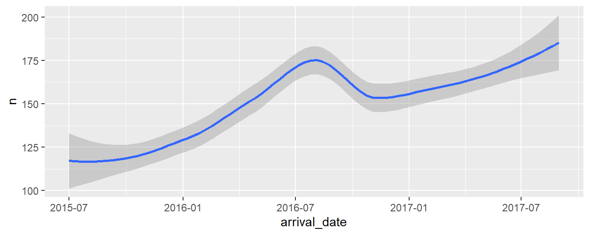
Étude de cas: Religion et Revenu
Les données
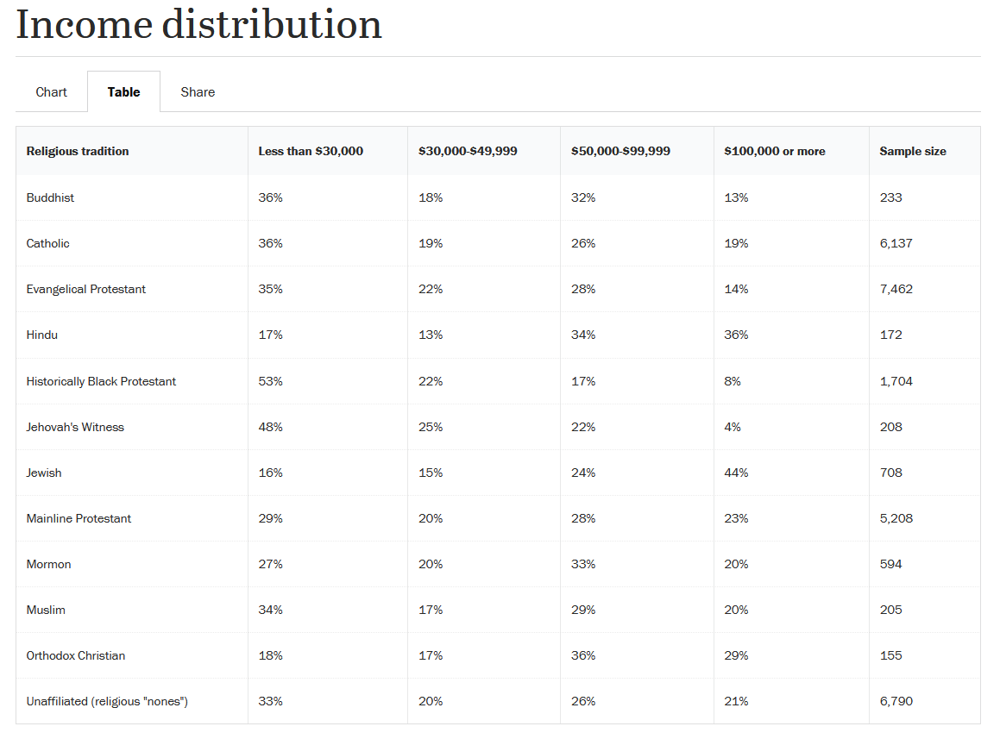
Les données
Rows: 12
Columns: 6
$ `Religious tradition` <chr> "Buddhist", "Catholic", "Evangelical Protestant"…
$ `Less than $30,000` <dbl> 0.36, 0.36, 0.35, 0.17, 0.53, 0.48, 0.16, 0.29, …
$ `$30,000-$49,999` <dbl> 0.18, 0.19, 0.22, 0.13, 0.22, 0.25, 0.15, 0.20, …
$ `$50,000-$99,999` <dbl> 0.32, 0.26, 0.28, 0.34, 0.17, 0.22, 0.24, 0.28, …
$ `$100,000 or more` <dbl> 0.13, 0.19, 0.14, 0.36, 0.08, 0.04, 0.44, 0.23, …
$ `Sample Size` <dbl> 233, 6137, 7462, 172, 1704, 208, 708, 5208, 594,…Noms des colonnes
rel_inc %>%
rename(
religion = `Religious tradition`,
n = `Sample Size`
) # A tibble: 12 × 6
religion `Less than $30,000` `$30,000-$49,999` `$50,000-$99,999`
<chr> <dbl> <dbl> <dbl>
1 "Buddhist" 0.36 0.18 0.32
2 "Catholic" 0.36 0.19 0.26
3 "Evangelical Protest… 0.35 0.22 0.28
4 "Hindu" 0.17 0.13 0.34
5 "Historically Black … 0.53 0.22 0.17
6 "Jehovah's Witness" 0.48 0.25 0.22
7 "Jewish" 0.16 0.15 0.24
8 "Mainline Protestant" 0.29 0.2 0.28
9 "Mormon" 0.27 0.2 0.33
10 "Muslim" 0.34 0.17 0.29
11 "Orthodox Christian" 0.18 0.17 0.36
12 "Unaffiliated (relig… 0.33 0.2 0.26
# ℹ 2 more variables: `$100,000 or more` <dbl>, n <dbl>Tidy ?
# A tibble: 12 × 6
religion `Less than $30,000` `$30,000-$49,999` `$50,000-$99,999`
<chr> <dbl> <dbl> <dbl>
1 "Buddhist" 0.36 0.18 0.32
2 "Catholic" 0.36 0.19 0.26
3 "Evangelical Protest… 0.35 0.22 0.28
4 "Hindu" 0.17 0.13 0.34
5 "Historically Black … 0.53 0.22 0.17
6 "Jehovah's Witness" 0.48 0.25 0.22
7 "Jewish" 0.16 0.15 0.24
8 "Mainline Protestant" 0.29 0.2 0.28
9 "Mormon" 0.27 0.2 0.33
10 "Muslim" 0.34 0.17 0.29
11 "Orthodox Christian" 0.18 0.17 0.36
12 "Unaffiliated (relig… 0.33 0.2 0.26
# ℹ 2 more variables: `$100,000 or more` <dbl>, n <dbl>Pivoter les données
rel_inc %>%
rename(
religion = `Religious tradition`,
n = `Sample Size`
) %>%
pivot_longer(
cols = -c(religion, n), # Toutes les colonnes sauf religion et n
names_to = "income",
values_to = "proportion"
) %>%
print(n = 15)Tidy !
# A tibble: 48 × 4
religion n income proportion
<chr> <dbl> <chr> <dbl>
1 Buddhist 233 Less than $30,000 0.36
2 Buddhist 233 $30,000-$49,999 0.18
3 Buddhist 233 $50,000-$99,999 0.32
4 Buddhist 233 $100,000 or more 0.13
5 Catholic 6137 Less than $30,000 0.36
6 Catholic 6137 $30,000-$49,999 0.19
7 Catholic 6137 $50,000-$99,999 0.26
8 Catholic 6137 $100,000 or more 0.19
9 Evangelical Protestant 7462 Less than $30,000 0.35
10 Evangelical Protestant 7462 $30,000-$49,999 0.22
11 Evangelical Protestant 7462 $50,000-$99,999 0.28
12 Evangelical Protestant 7462 $100,000 or more 0.14
13 Hindu 172 Less than $30,000 0.17
14 Hindu 172 $30,000-$49,999 0.13
15 Hindu 172 $50,000-$99,999 0.34
# ℹ 33 more rowsCalcul des fréquences
rel_inc %>%
rename(
religion = `Religious tradition`,
n = `Sample Size`
) %>%
pivot_longer(
cols = -c(religion, n),
names_to = "income",
values_to = "proportion"
) %>%
mutate(frequency = round(proportion * n)) # A tibble: 48 × 5
religion n income proportion frequency
<chr> <dbl> <chr> <dbl> <dbl>
1 Buddhist 233 Less than $30,000 0.36 84
2 Buddhist 233 $30,000-$49,999 0.18 42
3 Buddhist 233 $50,000-$99,999 0.32 75
4 Buddhist 233 $100,000 or more 0.13 30
5 Catholic 6137 Less than $30,000 0.36 2209
6 Catholic 6137 $30,000-$49,999 0.19 1166
7 Catholic 6137 $50,000-$99,999 0.26 1596
8 Catholic 6137 $100,000 or more 0.19 1166
9 Evangelical Protestant 7462 Less than $30,000 0.35 2612
10 Evangelical Protestant 7462 $30,000-$49,999 0.22 1642
# ℹ 38 more rowsEnregistrer les données
Visualisation
rel_inc_long %>%
ggplot(aes(y = religion, x = frequency)) +
geom_col()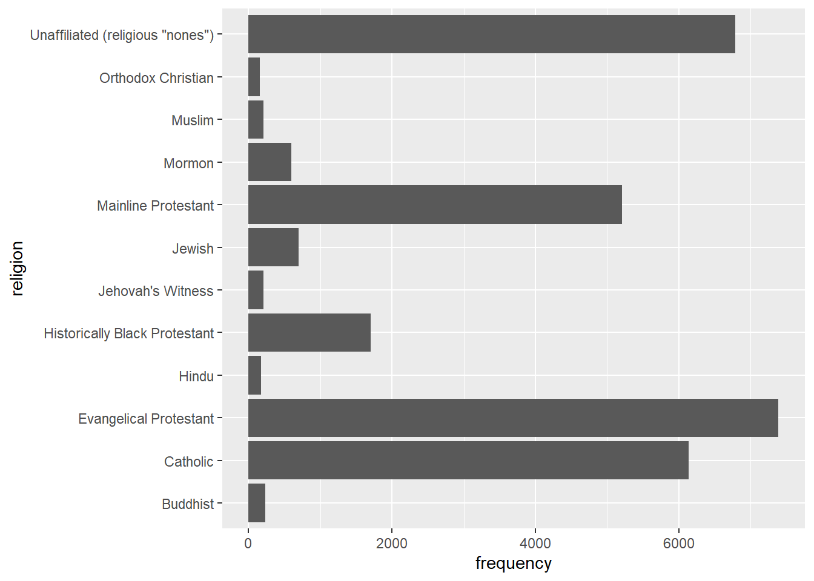
Recodage des religions
rel_inc_long <- rel_inc_long %>%
mutate(religion = case_when(
religion == "Evangelical Protestant" ~ "Ev. Protestant",
religion == "Historically Black Protestant" ~ "Hist. Black Protestant",
religion == 'Unaffiliated (religious "nones")' ~ "Unaffiliated",
TRUE ~ religion
))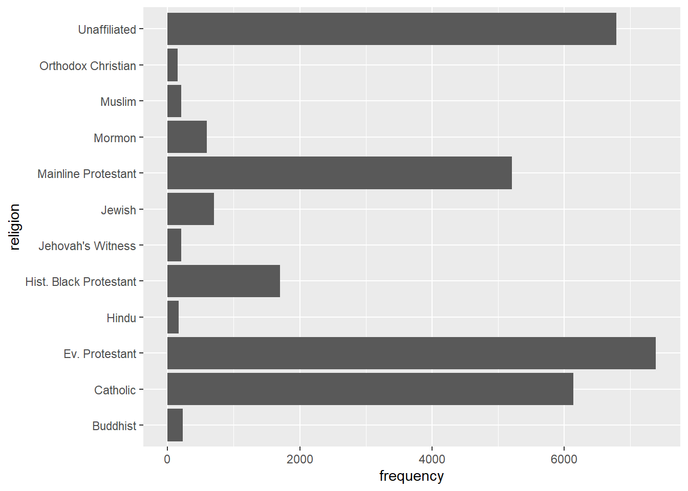
On inverse l’ordre
rel_inc_long <- rel_inc_long %>%
mutate(religion = fct_rev(religion)) 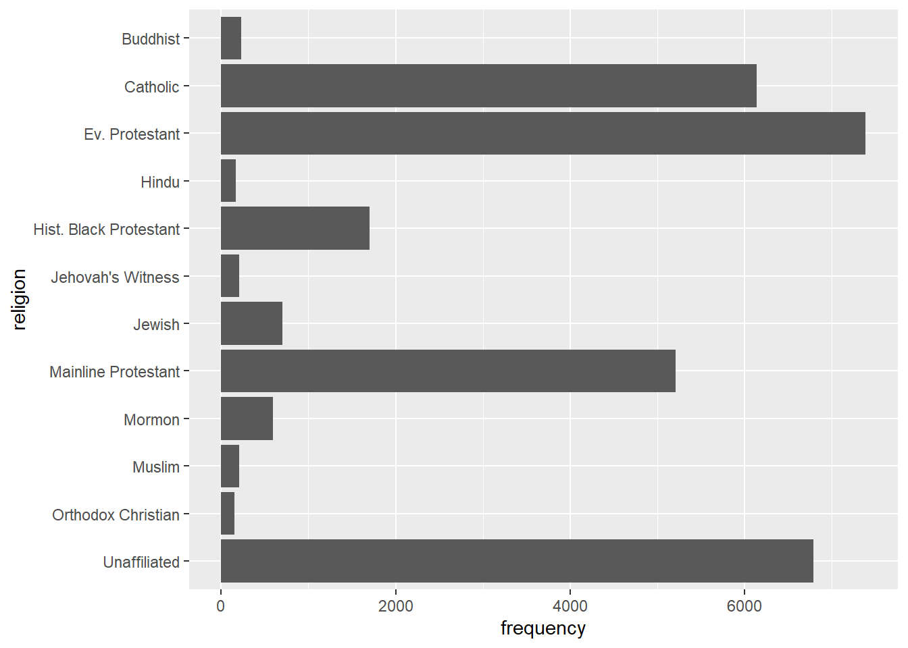
On nettoie tout ça
ggplot(rel_inc_long, aes(y = religion, x = frequency, fill = income)) +
geom_col(position = "fill") + # On veut des barres pleines pour les proportions
scale_fill_viridis_d() + # On change les couleurs
theme_minimal() + # On change le thème
theme(legend.position = "bottom") + # On met la légende en bas
guides(fill = guide_legend(nrow = 2, byrow = TRUE)) + # On met la légende sur 2 lignes
labs( # On met à jour les labels
x = "Proportion", y = "",
title = "Income distribution by religious group",
subtitle = "Source: Pew Research Center, Religious Landscape Study",
fill = "Income"
)TADA ?
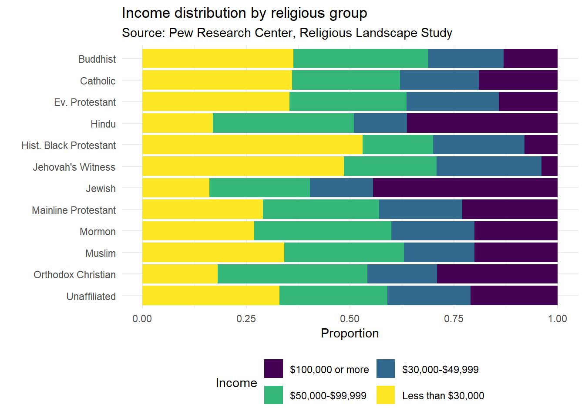
On veut les revenu dans le bon ordre !
rel_inc_long <- rel_inc_long %>%
mutate(income = fct_relevel(income, "$100,000 or more", "$50,000-$99,999", "$30,000-$49,999", "Less than $30,000"))TADA !
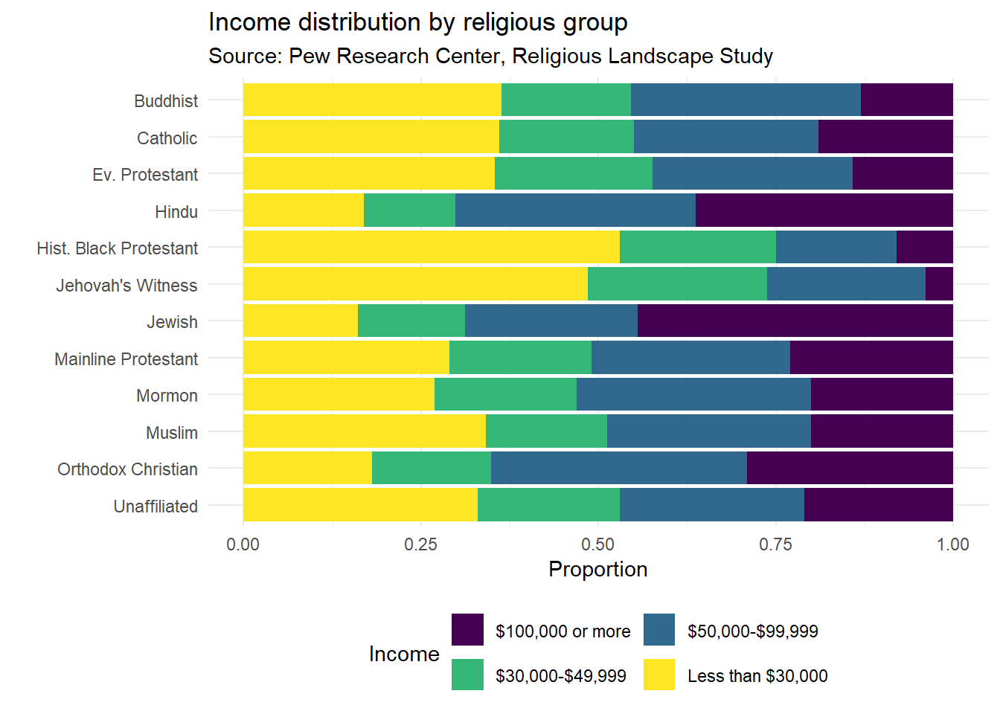